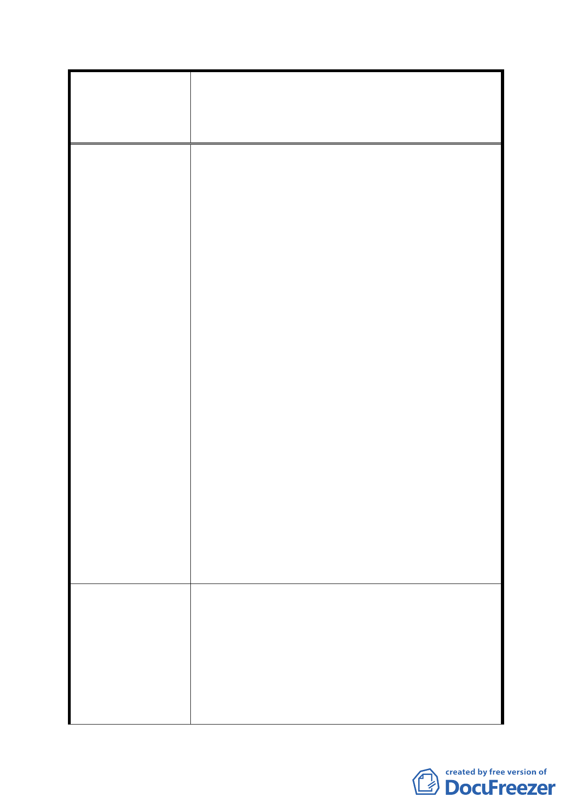

案名
發展局回應意見
擬定臺北市內湖區蘆洲里附近工業區細部計畫暨變
更第 2 種工業區為科技工業區 B 區(特)、科技工業
區 B 區、道路用地、護坡用地及變更工業區(供輕工
業使用)為科技工業區 A 區(特)計畫案
所得之容積坪數為 110 坪(11*55%5*2.00)，預估
該區房屋最高售價為每坪 35 萬元，則 110 坪之房
屋價值約計 3850 萬元(100*35 萬)。
分析:
1.同樣土地面積，因土地重劃之使用分區不同，因
而造成了科工 A 區與住宅區有 2156 萬元之價差，
無形中造成住宅區所有權人莫大損失。故分配不
均之情形下，建議取兩者之平衡，將住宅區容積
率 放 寬 至 300 。 換 算 所 得 可 分 回 165 坪 土 地
(100*55%*3.00)以每坪 35 萬元計算，則房屋價值
約 5775 萬元(165*35 萬)，雖與科工 A 區尚有差
距，但此時工業區房屋與住宅區房屋之價格相差
不遠，以價值面來說較為合理。
2.本人持有土地公告現值約為 63000 元/平方公尺，
但鄰近部分土地之公告現值約為 34000 元/平方
公尺，本人繳納之地價稅也會高於周遭部分土
地，目前由規劃科得知重劃完成後平均發還土地
約 55%，本人認為此做法不具公平性，應該依公
告現值高低於做為發還土地比率的依據較為恰
當。
3.本人民國 71 年持有土地，據本人了解重劃開發案
都為農地重劃，而農地使用期間是無需繳交地價
稅，但本人持有之土地現況為工二使用，至今繳
地價稅逾 27 年，本人請求應該依農地重劃方式歸
還全部或部分地價稅較為公平。
一、 有關住宅區與科技工業區容積率訂定區別 1
節，查為促進本地區更新開發，鼓勵地主參
與市地重劃，在總量不變原則下，將重劃區
內科技工業區容積率由原 200%調整提高為
364%(200%/55%)，另住宅區之劃設原意係以
安置地區現有住戶為原則，其容積率經考量
重劃後土地價值差異以及基於公平性原則，
故住宅區仍維持原容積率 200%，未予調整。
- 28 -